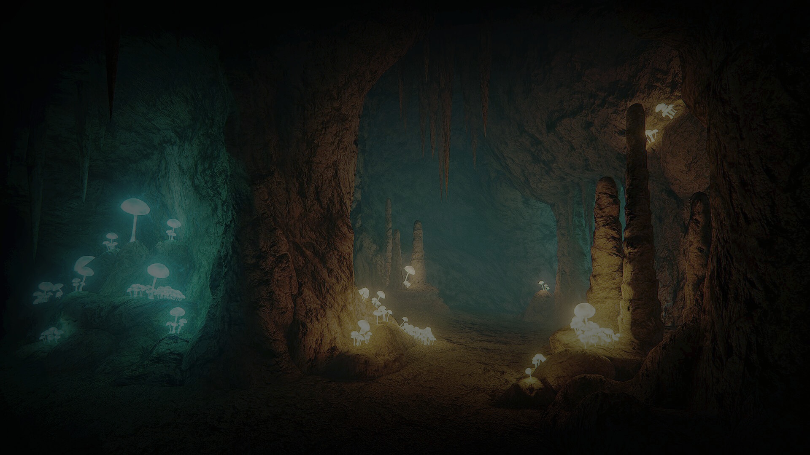

Proportional architecture
No React, Three.js, state library, or animation framework beyond the one tool that solves the actual motion problem.
01 / Forest
An accessible cinematic study of depth, rhythm, and motion — built with the native web platform and a deliberately small animation layer.
02 / X-Ray
See the system beneath the image
The same artwork becomes a spatial system when each layer receives a bounded depth value. Scroll through the scene to separate the strata, inspect their authored values, and watch them resolve back into one image.
Distance changes perception
Near, middle, and far layers move with different intensity. The effect is intentionally restrained: the story remains understandable even when every animation is removed.

Follow the user
Native scrolling stays authoritative. GSAP orchestrates compositor-friendly transforms and opacity, while reduced-motion users receive the same content without spatial movement.
Motion is progressive enhancement. Content, navigation, and reading order do not depend on JavaScript.
05 / Principles
No React, Three.js, state library, or animation framework beyond the one tool that solves the actual motion problem.
Fine-pointer enhancement, mobile-safe amplitudes, and a first-class
prefers-reduced-motion path.
Original visual assets are preserved at full quality. Performance work targets loading behavior, code, and compositing instead of degrading the artwork.
06 / System
Architecture made visible
System signals and explicit user preferences resolve into one pure motion profile. Browser adapters consume that profile at the edges, while the semantic document remains the source of truth.
Media queries and locally persisted Motion Lab preferences.
reducedMotion · pointer · override
One deterministic function clamps intensity and selects behavior.
getMotionProfile()
ScrollTrigger maps native scroll to bounded transforms.
motion.js
Fine pointers get one frame-coalesced depth signal.
pointer-depth.js
The same content survives when every enhancement disappears.
transform · opacity
07 / Aurora
Native web platform. Progressive enhancement. Accessible by default.